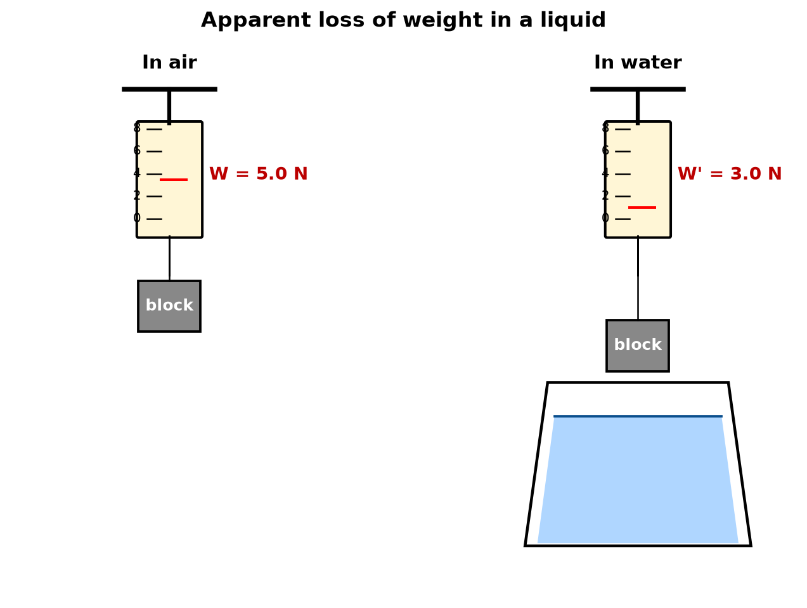
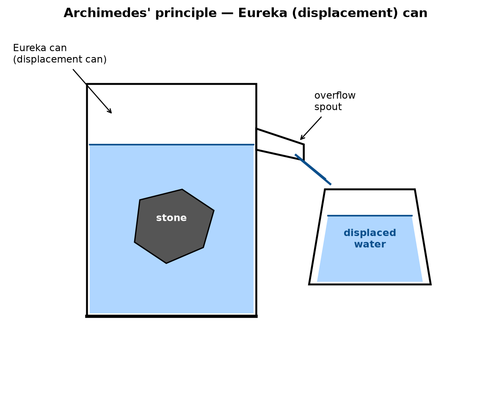

Density & Relative Density — Lesson 2
Upthrust & Archimedes’ Principle
Greenoak International School · Grade 10 Physics
Recall from Lesson 1
- Density \(\rho = m/V\). Water = 1000 kg m⁻³.
- Relative density \(\text{RD} =
\rho_\text{sub}/\rho_\text{water}\) — no unit.
- Today: why does a stone feel
lighter in water?
The puzzle
- Hang a stone on a spring balance in
air. It reads 5.0 N.
- Lower the stone into water. The
balance now reads 3.0 N.
- The stone has not lost any mass.
Yet it appears to weigh less.
- Something in the water is pushing
up on the stone.
Apparent weight loss — the demo

Upthrust — definition
- The upthrust (or buoyant
force) is the upward force exerted by a fluid
on a body partly or fully immersed in it.
- Symbol: \(U\). Unit: newton
(N).
- From the demo: \[U =
W_\text{air} - W_\text{water} = 5.0 - 3.0 = 2.0\ \text{N}\]
- Apparent weight = actual weight −
upthrust: \[W' = W - U\]
Why does upthrust exist?
- Pressure in a fluid increases with
depth: \(P = \rho g h\).
- The bottom of an immersed object
sits at greater depth than the top.
- So pressure on the bottom > pressure on the
top.
- The net force from this pressure difference acts
upward — this is upthrust.
Archimedes’ Principle
A body wholly or partly immersed in a fluid experiences an
upthrust equal to the weight of the fluid it displaces.
- “Fluid” means a liquid or a gas.
- “Displaced” = pushed aside by the body.
- In symbols: \[U =
W_\text{fluid displaced}\]
Eureka (displacement) can

Verifying Archimedes — procedure
- Fill a eureka can with water until
it just stops dripping from the spout.
- Place an empty beaker under the
spout; record its mass \(m_b\).
- Weigh the object in air on a spring
balance: reading \(W_\text{air}\).
- Lower the object fully into the can. Catch overflow
in the beaker.
- Record the spring-balance reading in water: \(W_\text{water}\).
- Weigh the beaker + overflow water:
mass \(m_{b+w}\).
Verifying Archimedes — results
- Upthrust (from the spring
balance): \[U = W_\text{air} -
W_\text{water}\]
- Weight of water displaced (from
the beaker): \[W_\text{disp} = (m_{b+w} -
m_b)\, g\]
- Within experimental error: \[U = W_\text{disp}\]
- This confirms Archimedes’
principle.
Worked Example 1 — direct upthrust
A stone weighs 4.0 N in air and 2.5
N when fully immersed in water. Find (a) the upthrust and (b)
the volume of the stone. Take \(g = 10\
\text{m s}^{-2}\), \(\rho_\text{water}
= 1000\ \text{kg m}^{-3}\).
- (a) Upthrust. \[U = W_\text{air} - W_\text{water} = 4.0 - 2.5 =
1.5\ \text{N}\]
- (b) Volume from Archimedes.
Rearrange \(U = \rho V g\): \[V = \dfrac{U}{\rho g} = \dfrac{1.5}{1000 \times
10}\]
- Compute: \[V = 1.5
\times 10^{-4}\ \text{m}^3 = 150\ \text{cm}^3\]
Worked Example 2 — using volume
A solid cube of side 5.0 cm is fully immersed in
water. Find the upthrust on the cube. (\(g =
10\), \(\rho_\text{water} =
1000\).)
- Volume of cube. \[V = (0.05)^3 = 1.25 \times 10^{-4}\
\text{m}^3\]
- Upthrust. \[U = \rho V g = 1000 \times 1.25 \times 10^{-4}
\times 10\]
- Compute: \[U = 1.25\
\text{N}\]
Common mistake — wrong density
- Some write \(U =
\rho_\text{object}\, V g\). Wrong.
- The density in \(U = \rho
V g\) is the density of the fluid,
not the density of the object.
- Memory aid: “Upthrust is paid for by the fluid,
not the object.”
Common mistake — wrong volume
- When an object is only partly
submerged, \(V_\text{displaced}\) is
only the submerged part, not the whole object.
- If a block of volume \(V\) floats with half-submerged, then \(V_\text{displaced} = V/2\).
- We will use this in Lesson 3 (flotation).
Density from apparent-weight loss
- From Lesson 1: \(\text{RD} =
\dfrac{\rho_\text{sub}}{\rho_\text{water}}\).
- A new experimental definition:
\[\text{RD} = \dfrac{\text{weight of
substance in air}}{\text{apparent loss of weight in
water}}\]
- Equivalently: \[\text{RD} = \dfrac{W_\text{air}}{W_\text{air} -
W_\text{water}}\]
Why does this equal RD?
- Apparent weight loss \(=
U =\) weight of water displaced.
- An object of volume \(V\) displaces \(V\) of water, which weighs \(\rho_w V g\).
- Weight of object \(=\) \(\rho_\text{obj} V g\).
- So \[\dfrac{W_\text{air}}{W_\text{air} -
W_\text{water}}
= \dfrac{\rho_\text{obj} V g}{\rho_w V g}
= \dfrac{\rho_\text{obj}}{\rho_w} = \text{RD}\]
Worked Example 3 — RD from weights
A solid weighs 6.0 N in air and 4.0
N in water. Find its relative density and its density.
- Apparent weight loss / upthrust.
\[U = 6.0 - 4.0 = 2.0\ \text{N}\]
- Relative density. \[\text{RD} = \dfrac{W_\text{air}}{U} =
\dfrac{6.0}{2.0} = 3.0\]
- Density. \[\rho = \text{RD} \times 1000 = 3000\ \text{kg
m}^{-3}\]
Worked Example 4 — RD in a liquid
A body weighs 8.0 N in air, 5.0 N
in water and 6.0 N in an unknown liquid. Find the RD of
the liquid.
- Upthrust in water. \[U_w = 8.0 - 5.0 = 3.0\ \text{N}\]
- Upthrust in liquid. \[U_L = 8.0 - 6.0 = 2.0\ \text{N}\]
- Same body displaces the same
volume in both liquids, so \[\text{RD}_L = \dfrac{U_L}{U_w} = \dfrac{2.0}{3.0}
= 0.67\]
Summary — the three upthrust equations
- \(U = W_\text{air} -
W_\text{liquid}\) (measurement)
- \(U = W_\text{fluid
displaced}\) (Archimedes)
- \(U = \rho_\text{fluid}\,
V_\text{displaced}\, g\) (from density × volume × g)
The same \(U\) in all three. Choose
the equation that matches the data you have.
Class task
Copy each into your exercise book; show working; units.
- A piece of iron weighs 0.80 N in air and 0.70 N in water. Calculate
(a) the upthrust and (b) the volume of the iron. (\(g = 10\).)
- A solid sphere of volume 200 cm³ is fully immersed in water. Find
the upthrust in newtons.
- A body weighs 15 N in air and 12 N in water. Find the relative
density of the body.
- A sinker weighs 6.0 N in air, 4.0 N in water, 5.0 N in paraffin.
Find the RD of paraffin.
Homework
Bring written answers to Lesson 3.
- (WAEC 2009.) A body of mass 500 g has a weight of 4.5 N
when fully immersed in water. Calculate the upthrust. (\(g = 10\).)
- (JAMB 2004.) An object weighs 50 N in air and 40 N when
fully immersed in a liquid of density 800 kg m⁻³. Calculate the volume
of the object. (\(g = 10\).)
- (WAEC 2014.) A body weighs 10 N in air, 8 N in water and
7.5 N in a liquid X. Find the relative density of X.
- State Archimedes’ principle.
- Explain, using the molecular picture of pressure, why upthrust acts
upward on a submerged body.
What we learned today
- Upthrust \(U\) =
upward force from a fluid on an immersed body.
- Archimedes: \(U =\) weight of fluid displaced.
- \(U = \rho_\text{fluid}\,
V_\text{displaced}\, g\) — the density is the
fluid’s.
- Apparent weight \(W'
= W - U\).
- \(\text{RD} =
W_\text{air} / (W_\text{air} - W_\text{water})\).
- Same body in two liquids: \(\text{RD}_L = U_L / U_w\).